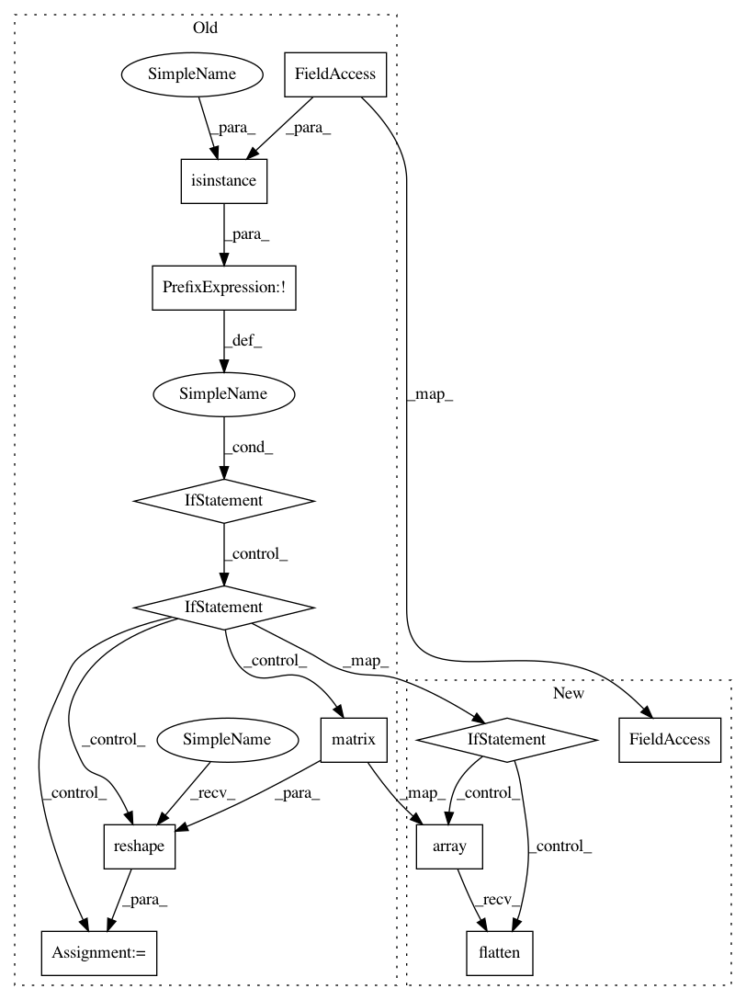

33a33b24185e45478c4758ac14cab8ae5234c44b,pgmpy/inference/base_continuous.py,GradientLogPDF,__init__,#GradientLogPDF#,112
Before Change
def __init__(self, theta, model):
// TODO: Take model as parameter instead of precision_matrix
if not isinstance(theta, np.matrix):
if isinstance(theta, (np.ndarray, list, tuple, set, frozenset)):
length = len(theta)
theta = np.matrix(theta)
theta = np.reshape(theta, (1, length))
else:
raise TypeError("theta should be a 1d array type object")
theta = np.reshape(theta, (len(theta), 1))
if theta.shape[1] != model.precision_matrix.shape[0]:
raise ValueError("shape of theta vector should be 1 X d if shape" +
" of precision matrix of model is d X d")
self.theta = theta
After Change
def __init__(self, theta, model):
// TODO: Take model as parameter instead of precision_matrix
if isinstance(theta, (np.matrix, np.ndarray, list, tuple, set, frozenset)):
theta = np.array(theta).flatten()
theta = np.matrix(np.reshape(theta, (len(theta), 1)))
else:
raise TypeError("theta should be a 1d array type object")
if theta.shape[0] != model.precision_matrix.shape[0]:
raise ValueError("shape of theta vector should be 1 X d if shape" +
" of precision matrix of model is d X d")
self.theta = theta
In pattern: SUPERPATTERN
Frequency: 3
Non-data size: 12
Instances
Project Name: pgmpy/pgmpy
Commit Name: 33a33b24185e45478c4758ac14cab8ae5234c44b
Time: 2016-06-17
Author: utkarsh.gupta550@gmail.com
File Name: pgmpy/inference/base_continuous.py
Class Name: GradientLogPDF
Method Name: __init__
Project Name: pgmpy/pgmpy
Commit Name: 33a33b24185e45478c4758ac14cab8ae5234c44b
Time: 2016-06-17
Author: utkarsh.gupta550@gmail.com
File Name: pgmpy/inference/base_continuous.py
Class Name: AbstractGaussian
Method Name: __init__
Project Name: pgmpy/pgmpy
Commit Name: 33a33b24185e45478c4758ac14cab8ae5234c44b
Time: 2016-06-17
Author: utkarsh.gupta550@gmail.com
File Name: pgmpy/inference/base_continuous.py
Class Name: AbstractGaussian
Method Name: get_val